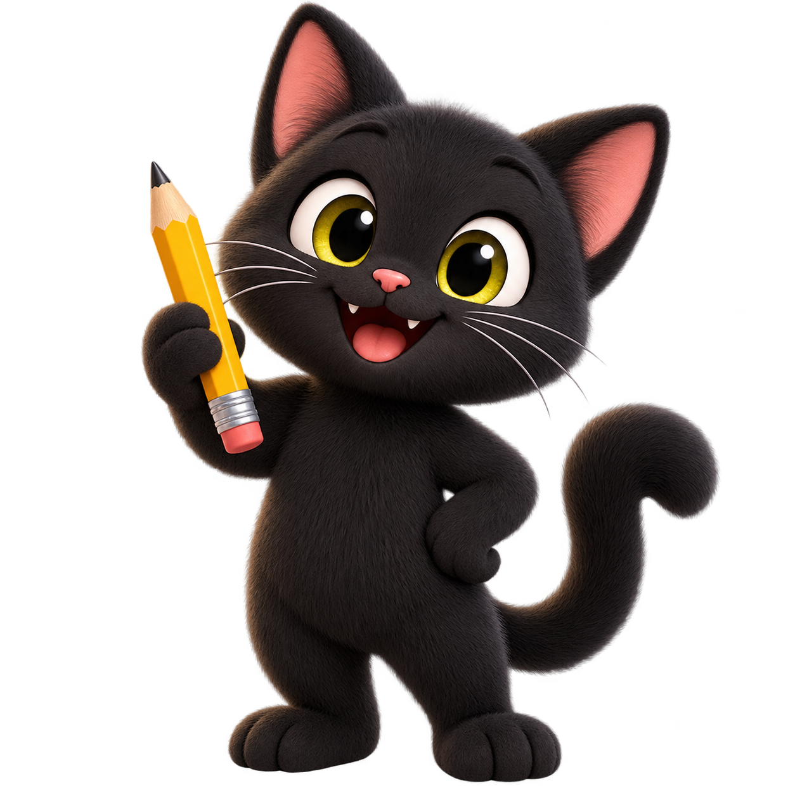

Every ending is a new beginning.
Sentence
Adventures
Read the beginning. Look at the picture. Choose the ending that makes sense.
Grades 2–3100 per version3 endings
Next, choose your school-supply picture to save your place.


MYSTIC & MAGIC CATEvery ending is a new beginning.
Read the beginning. Look at the picture. Choose the ending that makes sense.
Next, choose your school-supply picture to save your place.